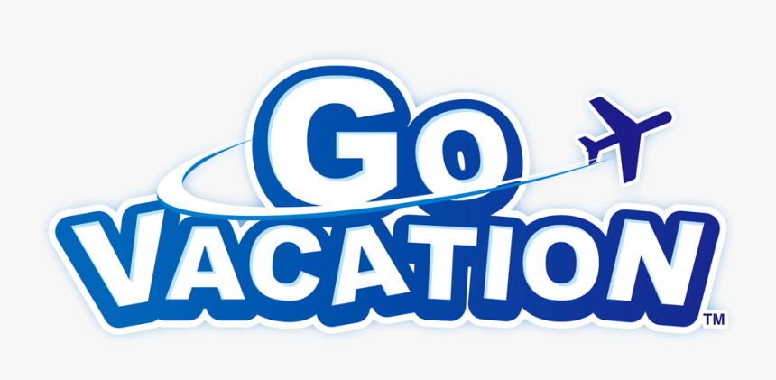

Go Vacation is one of the few games I dare to try to 100%
Go Vacation is a game I’ve had with me for a long time. While I don’t remember exactly when I got it, I remember enjoying it since I was young.
So what is Go Vacation? Think of it as Wii Sports Resort, but you can explore the island (in most areas). Well, not exploring Wuhu Island. The game takes you to a location called Kawawii Island, with areas around the island to enjoy the sea, city, snow, and mountains! As you are exploring the island, you will notice some islanders with yellow square icons over their heads, indicating an activity (which are minigames). After doing those activities (whether you win or lose), you will get a stamp, which will unlock more areas.
Stamp Dash
Except for the first stamp, the Marine Bike Race (unless you are in multiplayer with a profile that has already started) allows you to claim stamps in any order (despite what the game tells you), as long as you have that resort area unlocked. After receiving a certain number of stamps, you’ll unlock more sections of the island, called resorts.
Each of the resorts has its own outfits you can change into. At first, you will only have the defaults, but throughout each resort, there are 7 chests scattered about, with new outfits. In addition, you have gear to allow you to get around the area a bit faster (such as Marine Bikes, Skateboards, Horses, and more), and the gear you can use is different for each resort, which you can also change.
Your character and gear are not the only things you can decorate! Once you have received 20 stamps, you will unlock an area called the Villa Grounds, and you will receive your own Villa (or house). You are able to decorate your house with the default furniture sets given to you, with the ability to unlock more. In addition, you can somewhat change the layout of your house (basically splitting the villa into sections. In addition, you can gain keys (which will be explained below) to choose to unlock what you would like to get for your villa.
The game has two different versions (to my knowledge), one for the Wii and one for the Switch. Wii Exclusive features will be defined with and Switch exclusive features will be defined with